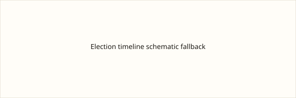

España · elecciones · 11 de octubre de 2026
Sánchez intervino en un acto de precampaña en Ponferrada y ERC confirmó a Rufián como cabeza de lista al Congreso.

Lo que coinciden los medios
El presidente del Gobierno y secretario general del PSOE, Pedro Sánchez, participó este domingo en un acto de precampaña en la Térmica Cultural de Ponferrada (León), el segundo tras el de Dos Hermanas del sábado. Europa Press reportó al menos 2.000 asistentes en el interior y más de mil en el exterior. Sánchez llamó a la movilización electoral para el 29 de noviembre y defendió las políticas de su Ejecutivo en empleo, pensiones y vivienda. Por separado, Esquerra Republicana de Catalunya anunció que Gabriel Rufián, actual portavoz en el Congreso, volverá a encabezar la lista de la formación al Congreso en las elecciones del 29 de noviembre. La decisión se formalizará en una reunión de la ejecutiva nacional; las listas definitivas se aprobarán el 20 de octubre.
Los medios coinciden en la celebración del acto, la presencia de Sánchez y la confirmación de Rufián como cabeza de lista.
Lo que es solo una cita
Las frases de Sánchez sobre “cuatro años más de avance y menos insultos de la derecha”, o sus referencias a la vivienda y a Maricarmen, son intervenciones de campaña. No constituyen hechos jurídicos ni cifras oficiales nuevas. Las especulaciones previas sobre si Rufián lideraría un Frente Amplio o permanecería en ERC son análisis políticos superados por el comunicado del partido.
Mecanismo que el lector necesita
El Real Decreto 806/2026 disolvió las Cortes y convocó elecciones generales para el 29 de noviembre. La precampaña es el período previo a la campaña electoral formal en el que los partidos organizan actos y definen candidaturas. Las listas al Congreso y al Senado se cierran en procesos internos de cada formación y se presentan ante la Junta Electoral Central en fechas fijadas por la ley. La confirmación de Rufián cierra semanas de especulación sobre posibles coaliciones de izquierda; ERC ha optado por concurrir con sus propias siglas. Las cifras de asistentes a mitines son estimaciones de organizadores o de medios; no hay un recuento oficial independiente.
El derecho al voto de los descendientes de exiliados (ley de nietos) y otras cuestiones de procedimiento electoral siguen pendientes de resoluciones judiciales o administrativas; las declaraciones de campaña sobre ellas no alteran el estado de esos expedientes.
Lo que esta historia no es
No es un pronóstico de resultados electorales. No es un listado completo de candidaturas. La fotografía es la sede del Gobierno, no el recinto del acto.

Artículos fuente y puntuaciones
Imágenes: fotografía de archivo de la Moncloa en Wikimedia Commons vía Special:FilePath. El pie indica que no es el acto. onerror al SVG comprometido. Sin atributo CORS.